Moves Workforce 실제 캡처 21장
2026-10-04 지정된 staging에서 촬영한 영어 화면입니다. 한·영 가이드가 같은 이미지를 사용합니다.
한·영 가이드 미리보기
01-entry-jira-apps-menu.jpg 02-mywork-overview.jpg
02-mywork-overview.jpg 02-worklog-modal-period.jpg
02-worklog-modal-period.jpg 02-worklog-modal-simple.jpg
02-worklog-modal-simple.jpg 04-project-list-drawer.jpg
04-project-list-drawer.jpg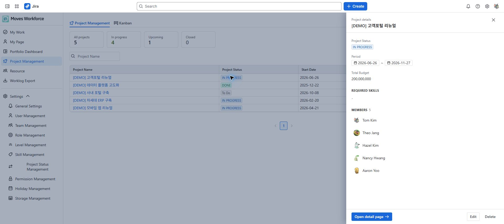
04-project-list.jpg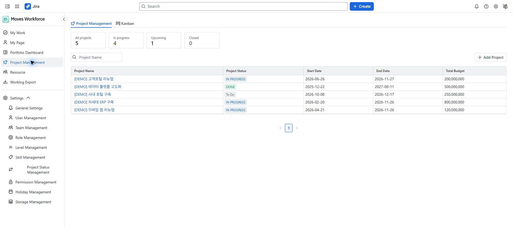
05-dashboard-overview.jpg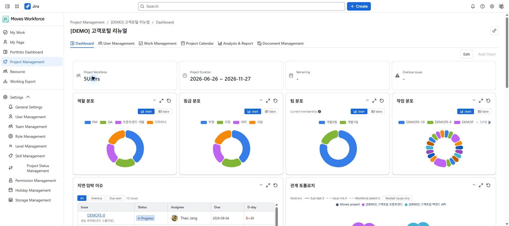
05-documents-link-modal.jpg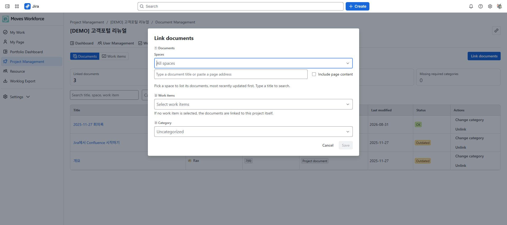
05-documents-overview.jpg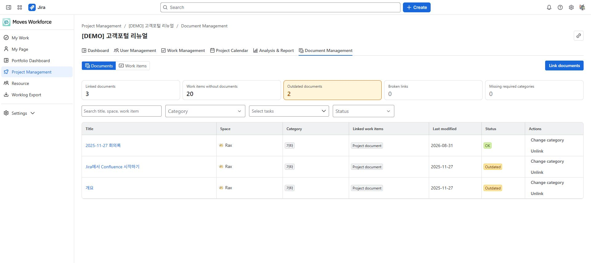
05-documents-work-selection.jpg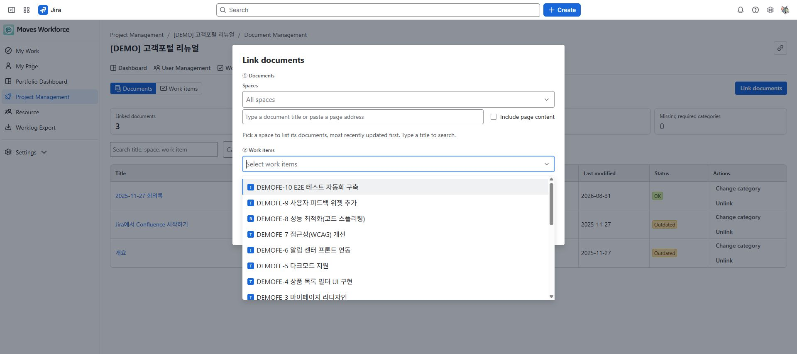
05-user-list-teams.jpg 05-work-gantt.jpg
05-work-gantt.jpg 05-work-subscription-conditions.jpg
05-work-subscription-conditions.jpg 05-work-subscription.jpg
05-work-subscription.jpg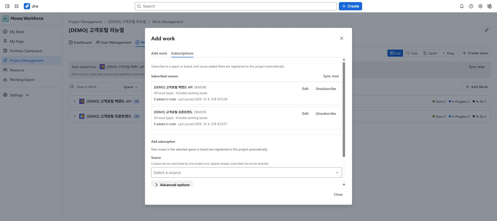
06-resource-assignment.jpg 06-resource-work-picker.jpg
06-resource-work-picker.jpg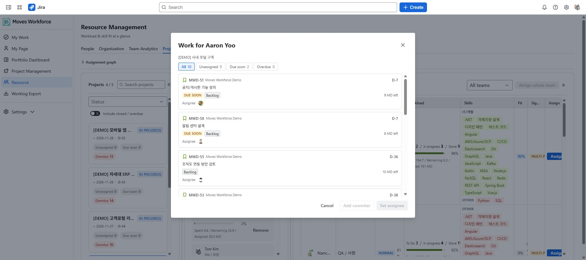
07-general-settings-policy.jpg 07-general-settings.jpg
07-general-settings.jpg 07-permission-overview.jpg
07-permission-overview.jpg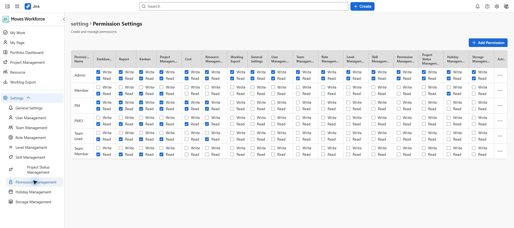
07-permission-set.jpg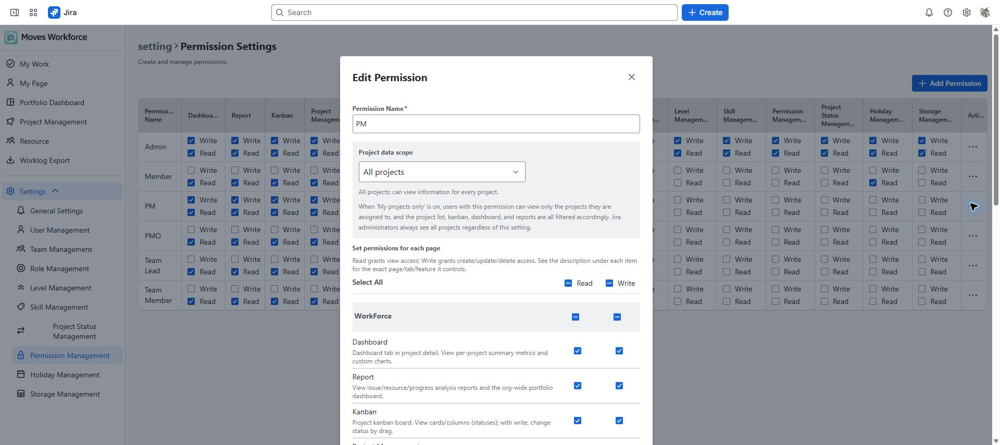
10-issue-panel-unavailable.jpg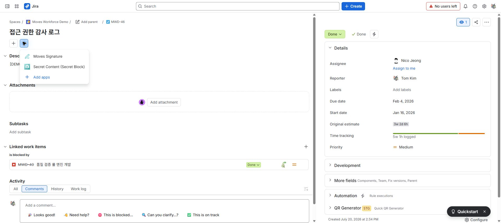